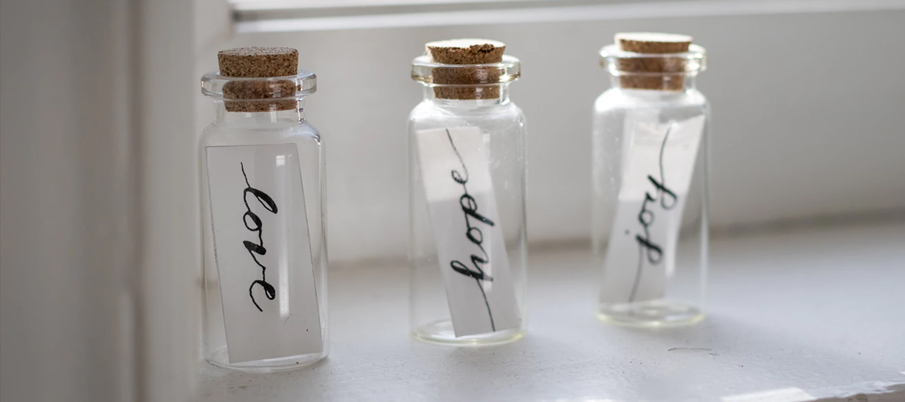

Trandy Shania Street 21 55555
Carmenito Stylish Porto, Portugal
Photography is the art, application and practice of creating durable images by recording light or other electromagnetic radiation, either electronically by means of an image sensor, or chemically by means of a light-sensitive material such as photographic film. It is employed in many fields of science.
Several people may have coined the same new term from these roots independently. Hercules Florence, a French painter and inventor living in Campinas, Brazil, used the French form of the word, photographie, in private notes which a Brazilian historian believes were written in 1834.
The German newspaper Vossische Zeitung of 25 February 1839 contained an article entitled Photographie, discussing several priority claims – especially Henry Fox Talbot's – regarding Daguerre's claim of invention. The article is the earliest known occurrence of the word in public print. It was signed "J.M.", believed to have been Berlin astronomer Johann von Maedler.
The German newspaper Vossische Zeitung of 25 February 1839
The German newspaper Vossische Zeitung of 25 February 1839 contained an article entitled Photographie, discussing several priority claims – especially Henry Fox Talbot's – regarding Daguerre's claim of invention. The article is the earliest known occurrence of the word in public print. It was signed "J.M.", believed to have been Berlin astronomer Johann von Maedler.
The German newspaper Vossische
Newspaper Vossische the German